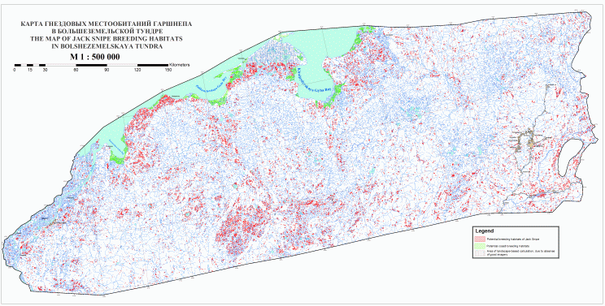

Выделение гнездовых местообитаний гаршнепа в большеземельской тундре по материалам космической съемки высокого разрешения
Поспелов И.Н. (Институт проблем экологии и эволюции РАН)
Дубинин М.Ю. (Центр охраны дикой природы)
Если вы заинтересовались этим проектом, использованными данными или методологией, пожалуйста, обратитесь к авторам, они с удовольствием ответят на ваши вопросы.
Введение
Гнездовая экология и распространение гаршнепа (Lymnocryptes minimus, рис.1) в России изучена слабо. За исключением районов работ В.В.Морозова в Большеземельской тундре, находки гнезд этого вида исчисляются единицами (Rogacheva 1992, Рябицев, 2001, The EBCC Atlas., 1997 и др.). Это связано со скрытностью вида и трудностью нахождения гнезд (насиживающая птица сидит так плотно, что взлетает только при угрозе быть раздавленной). Однако все вышеприведенные источники сходятся в том, что гнездовой экотоп гаршнепа очень узок. Это массивы гомогенных осоково-моховых болот и их участки достаточной площади в массивах крупно- и плоскобугристых болот. Столь узкая экологическая приуроченность и дешифрируемость экотопа позволила выполнить данную работу. Работы по дешифрированию потенциальных гнездовых экотопов этого вида по космической съемке высокого разрешения, проводятся в России впервые.
Для выполнения работы использовано программное обеспечение ESRI ArcView 3.3, ArcGis 8.3, Leica Geosystems Erdas Imagine 8.6.
 |
Гаршнеп (Lymnocryptes minimus). (Фото В. В. Морозова) |
1. Материалы и методика
1.1. Характеристика гнездовых местообитаний гаршнепа в Большеземельской тундре и их дешифровочные признаки на космических снимках высокого разрешения.
Гаршнеп населяет гомогенные умеренно сырые осоково-моховые болота по берегам мелководных озер и в пределах массивов полигональных, плоско- и крупнобугристых болот преимущественно в южных тундрах. В Субарктике и Арктике северо-востока России выделяется 7 типов болот 4-х классов типов (Растительность Европейской части СССР…, 1980). Из сфагновых болот в Большеземельской тундре в основном представлены кустарничково-травяно-сфагновые и травяно-сфагновые, которые могут быть гнездовым экотопом гаршнепа, но занимают весьма небольшие площади, этот тип болот более свойственен северу Западной Сибири. Наиболее распространенные болота Большеземельской тундры – травяно-лишайниково-моховые – представлены тремя зональными типами. Все эти три типа различаются составом растительности бугров и понижений (мочажин), и возможность обитания на них гаршнепа зависит в первую очередь от соотношения площадей повышений и повышений. Понижения, которые, собственно и являются искомым биотопом, пушицево-осоково-сфагновые и пушицево осоково-гипновые. Только в лесотундровой зоне могут встречаться травяно-сфагново-гипновые аапа-болота, в пределах модельной территории находится северная граница их распространения. Наконец, болота травяного (травяно-гипнового) класса типов представлены исключительно в тундровой зоне, причем преимущественно в северной ее части, и представлены травяно-осоковыми приморскими и осоково-пушицево-гипновыми северо- и южнотундровыми болотами. В отношении приморских болот факт гнездования гаршнепа неизвестен, хотя они и могут являться его гнездовым биотопом.
Несмотря на значительное разнообразие типов болот, непосредственно гнездовой биотоп гаршнепа везде довольно сходен и растительность его можно охарактеризовать как мохово-осоковую или осоково-моховую, причем именно на грани перехода между доминированием осоковых и мхов по проективному покрытию. Осоковые представлены Carex concolor, C. chordorrhiza, C. rotundata, C. rariflora, C. magellanica subsp. irrigua, Eriophorum medium, E. russeolum, E. polystachyon, реже – E. vaginatum; мхи – Aulacomnium palustre, Sphagnum lindbergii, S. riparium, S. fimbriatum и другие виды рода Sphagnum, Warnstorfia straminea, W. exannulata, Limprichtia revolvens, и другие субгигрофильные и гигрофильные мхи, кроме того, часто в растительном покрове играют существенную роль Hieochloe pauciflora, Dupontia psilosantha (на севере), Comarum palustre, Calamagrostis neglecta. Покрытие травяного (осоково-пушицевого) яруса составляет 30 - 60 %. В ряде случаев зарегистрировано гнездование и в чисто моховых мокрых болотах (см. рис.5)
Примеры гнездовых биотопов гаршнепа приведены на фотографиях рис.2-7
 |
Рисунок 2. Гнездовой биотоп гаршнепа – мохово-осоковое гомогенное болото, зарастающее днище неглубокой осушенной озерной котловины. Район п. Советский, южные тундры. Фото В.В.Морозова |
 |
Рисунок 3. Гнездовой биотоп гаршнепа – мохово-осоковое болото, участок большой площади. Район п. Советский, южные тундры. Фото В.В.Морозова |
 |
Рисунок 4. Бугристое комплексное болото, понижения (мочажины), кроме обводненных – гнездовые биотопы гаршнепа. Район п. Советский, южные тундры. Фото В.В.Морозова |
 |
Рисунок 5. Различные варианты растительности гомогенного болота, на переднем плане – гигрофильномоховая мочажина (кормовой биотоп гаршнепа , хотя вероятно и гнездование), осоковые сообщества на заднем плане относятся к оптимальным гнездовым биотопам. Район п. Советский, южные тундры. Фото В.В.Морозова |
 |
Рисунок 6. Небольшой фрагмент гнездового биотопа гаршнепа – осоковое прибрежное болото. Лесотундра к юго-западу от Воркуты, фото В.В.Морозова |
 |
Рисунок 7. Осоково-моховые болота на днище ложбины стока, лучше всего видны в левой части фото. Лесотундра к юго-западу от Воркуты, фото В.В.Морозова. |
Болота, участки которых являются гнездовыми местообитаниями гаршнепа, повсеместно приурочены к осушенным озерным котловинам и периферийным частям озер, плоским водоразделам и участкам термокарста на них, реже – к долинам рек и склоновым шлейфам. На рисунке 8 приведен фрагмент космической съемки одного из ключевых участков, на котором имеется наиболее полный массив наблюдений за гнездованием гаршнепа Особняком стоят приморские равнины, занимающие значительные площади по берегу Баренцева моря, однако, по причине того, что сведения о гнездовании гаршнепа на них отсутствуют, в итоговой карте они выделены в отдельный класс – не исследованный на предмет наличия гнездовых биотопов.
Даже в условиях, когда биотоп оптимален, для того, чтобы он представлял интерес как гнездовой, необходимо соблюдение следующих условий:
А) Площадь отдельно взятого биотопа должна быть достаточно большой (по устному сообщению В.В. Морозова, не менее 1000-2500 м2, причем желательно нахождение аналогичных биотопов поблизости. Наблюдались случаи гнездования гаршнепа и на единичных отдельно расположенных болотцах (например, рис. 6), но случаи эти весьма редки и для расчета общей площади ими можно пренебречь.
Б) В непосредственной близости от гнездового биотопа должны находиться кормовые – мелководные побережья озер (рис. 2,4,5).
В) Отсутствие закустаренности непосредственно гнездового биотопа. Таким образом, исключаются болота в долинах рек и ложбинах стока, сплошь заросшие кустарниками ( Salix spsp., Betula nana).
 |
Рисунок 8. Фрагмент космосъемки на район п. Советский (в левом верхнем углу), где проводятся постоянные наблюдения. Сверху – снимок ЕТМ+ (каналы 3-4-5), снизу – ASTER. Некоторые участки с гнездовыми биотопами обведены черным контуром. Фотографии, приведенные на рисунках 2-5, сделаны в этом районе |
С одной стороны, выявляемый биотоп является достаточно контрастным, а его размеры соответствуют разрешению используемых данных дистанционного зондирования: (30 м/пиксел – ETM+, 15 м/пиксел – ASTER. С другой стороны, биотоп находится в окружении еще более контрастных объектов и встречается, как правило, с ними в комплексе. Это водоемы и бугры болот с высокой ролью лишайников в растительном покрове. Такие объекты обладают сильным спектральным откликом и отображаются на космическом снимке в большем размере, чем реально занимают на местности (например водоем, имеющий в реальности поперечник 10-15 м, а на панхроматическом канале снимка ETM+ может занимать в 3-4 раза большую площадь – 4 пиксела (60х60 м)).
Таким образом, практическая невозможность чисто автоматического дешифрирования биотопа была ясна с самого начала, и итоговые работы строились на сочетании автоматического и ручного дешифрирования материалов дистанционного зондирования Земли (ДЗЗ).
1.2 Методика работы
Территория, на которую проведено картографирование, показана на рис. 9.
 |
Рисунок 9. Схема модельной территории |
С востока на запад она простирается от р. Печора до подножия Полярного Урала, исключая горные сооружения. Южная граница проведена приблизительно по границе распространения лесной растительности, хорошо дешифрируемой по материалам ДЗ (см. ниже карту зональности модельной территории); практически совпадающей с административной границей Ненецкого АО. Северная граница на западе территории проходит по побережью Баренцева моря, на востоке территории проведена по условной линии на восток от устья р. Коротаиха, как предполагаемой границе гнездового ареала гаршнепа.
Общая площадь модельной территории (сухопутная) 96247 км2
1.2.2. Характеристика материалов ДЗЗ, использованных для создания карты
Для дешифрирования всего было отобрано 12 космических снимков: 10 снимков сделанных камерой ETM+ спутника Landsat 7, а также 2 снимка камеры ASTER спутника Terra (юго-восток модельной территории). Схема покрытия территории материалами ДЗЗ представлена на рис. 10.
 |
|||||||||||||||||||||||||||||||||||||||
Рисунок 10. Схема использованных при создании карты материалов ДЗЗ. Цифрами обозначены номера снимков: |
|||||||||||||||||||||||||||||||||||||||
|
Качество материалов ДЗЗ использованных в работе, было весьма высоким, за исключением участков, показанных на схеме рис. 11.
 |
Рисунок 11. Участки закрытые космической съемкой сравнительно низкого качества:
|
Снимок № 4 был сделан в весьма ранний период, когда еще не закончилось половодье, не стаял весь снег, а на крупных озерах лежал лед, поэтому возможны определенные ошибки в его дешифрировании. Они связаны в первую очередь с отсутствием листвы на кустарниках в этот период, из-за чего затруднительно отделение сильно закустаренных биотопов. Однако, как видно из итоговой карты, существенных изменений пространственной плотности гнездового биотопа на краях этого снимка по сравнению с прилегающими результатами дешифровки соседних снимков, нет; следовательно, мы полагаем, что эти погрешности незначительны. Более значительными могут быть ошибки на участках с повышенной облачностью. Здесь наряду с дешифрированием, был проведен и анализ картографических материалов (топографические карты масштаба 1:100000 и 1:200000).
Снимок № 12 был использован только для уточнения ландшафтной структуры небольшого участка севернее пос. Варандей, по причине облачности более 50%. Здесь расчет площади гнездового биотопа был проведен по принципу ландшафтной аналогии с прилегающим участком (был рассчитан %% отдешифрированного биотопа и экстраполирован на территорию севернее с абсолютно аналогичными по структуре ландшафтами).
1.2.3. Проведение первичной классификации и ее натурная верификация на ключевых участках.
По первоначальному плану, предполагалось создание крупномасштабной карты на один из ключевых участков Большеземельской тундры (район пос. Советский близ Воркуты) и проверка точности дешифрирования на местности во время полевых работ. Однако, из-за позднего начала работ, пришлось ограничиться выполнением классификаций на 4 ключевых участка, на которых предполагалось проведение полевых исследований. Схема расположения этих участков приведена на рис. 12.
 |
Рисунок 12. Расположение участков проведения полевой верификации предварительных классификаций (зеленые контура). |
Самый северный из участков посетить не удалось по техническим причинам, однако там верификация классификации была проведена на основании наблюдений прошлых лет.
Классификации были созданы при помощи модуля Image Analysis для ГИС ArcView 3.3 (команда Categorize, количество классов было выбрано равным 25). Перед классификацией было проведено увеличение разрешения спектральных каналов 1-6 снимков ЕТМ+ при помощью панхроматического канала до разрешения 15 м/пиксел ( Erdas Imagine 8.6, функция Resolution Merge), что позволило создать схемы с фактическим масштабом около 1:50000. Было создано несколько вариантов классификаций по разным сочетаниям каналов снимка ETM+ и по каждой из них были выявлены классы, приблизительно соответствующие гнездовым биотопам гаршнепа. Пример такой классификации приведен на рис. 13. Таким образом, исследователи были снабжены распечатками, как классификаций, так и исходных снимков.
Полевые наблюдения показали, что все варианты классификаций, хотя и включают в себя гнездовые биотопы гаршнепа, охватывают более широкий диапазон биотопов. В частности, в них попали кустарниковые биотопы ложбин стока и плакорные тундры с разреженными кустарниками и значительным покрытием осоковых. Тем не менее, на основе полевых данных были выделены эталонные участки со значительными площадями однородных гнездовых биотопов гаршнепа, на основании которых и строилась дальнейшая работа над картой.
 |
Рисунок 13. Вверху исходный снимок ETM + (каналы 1-2-3), внизу он же с первичной классификацией, зеленым выделены классы, соответствующие гнездовым биотопам гаршнепа, голубым – водоемы. Территория к юго-западу от большого озера в центре участка – комплекс эталонных биотопов. |
1.2.4. Создание выходной карты.
На основании полученных нами результатов полевых работ было установлено что автоматическая классификация почти всегда охватывает больше биотопов, чем нужно. Поэтому более эффективным оказался подбор классификаций, охватывающих только наиболее выраженные участки гнездового биотопа, с последующей их как автоматической, так и ручной обработкой. Оптимальным сочетанием каналов для выявления болот – гнездовых биотопов, оказалось сочетание 5-4-2, по этому сочетанию и проводились классификации 9 из 12 использованных снимков ДЗЗ (снимки ASTER дешифрировались полностью вручную). Классификация проводилась в Erdas Imagine (unsupervised classification). В результате было получено 9 классификаций, количество классов в них составило 15-25. Подбор количества классов осуществлялся индивидуально для каждого снимка на основании нескольких эталонных биотопов. Для обеспечения идентичности выделяемых объектов обязательно выбирались несколько эталонных биотопов на перекрытиях снимков. При этом классификация подбиралась так, чтобы совпадение объектов на перекрытиях было максимальным. Большее число классов понадобилось выделить для снимков на более сложные в ландшафтном отношении снимки (например, на востоке территории, где присутствуют как равнинные, так и горные биотопы). При попытке работы с классификациями с количеством классов более 25 происходило слишком сильное дробление выделяемого гнездового биотопа, и работа с такими классификациями была затруднена. Число классов, соответствующих выявляемому биотопу составило от 1 до 4-х. Мы сознательно не приводим спектральные характеристики полученных классов по причине их разнородности и значительных различий в зависимости от конкретного снимка. Кроме того, даже в этих классификациях часть выделившихся объектов была «лишней». Так, часть классификаций захватила некоторые участки плакорных лишайниковых тундр, другая часть – долинные кустарники. Смешивание обусловлено наличием подобных биотопов на эталонных участках в качестве элементов болотного комплекса – лишайниковых бугров, и кустарниковых (ерниковых) бугров и их склонов, что вносило искажения в спектральные характеристики объекта. Интересно то, что не смотря на многократные попытки выполнить классификацию с обучением ( Supervised classification), она не дала какого- либо прироста качества результата по сравнению с обычной классификацией, что обусловлено, на наш взгляд, теми же факторами – комплексностью ландшафтных единиц, включающих гнездовой экотоп. Кроме того, многие материалы ДЗЗ включали территории от типичных тундр до северной тайги одновременно, а также горных массивов, что делает создание единых классификаций маловозможным при таком зонально-ландшафтном разнообразии.
Поэтому требовалась ручная обработка полученных результатов. Пример полученной классификации показан на рис. 14. Все полученные классификации были преобразованы в бинарный формат (2 класса – «да» и «нет»), объединены в единую мозаику изображений и векторизованы с помощью инструментария Erdas Imagine. Однако, и это тоже видно из приведенного примера, часть биотопов была значительно фрагментирована при классификации. Поэтому в дальнейшем проводилась следующая операция – массивы объектов, соответствующие по визуальным признакам гнездовому биотопу, выделялись и буферизовались с последующим слиянием буферных зон на 25 м (приблизительный размер половины диагонали одного пиксела), что в результате обеспечивало получение единого контура. Фрагмент такой операции приведен на рис. 15.
Снимки ASTER, а также закрытые облачностью участки снимков ETM+, дешифрировались вручную.
После полной обработки классификаций вся территория была «пройдена» дешифрированием еще дважды – при первом проходе выявлялись гнездовые экотопы, по каким-либо причинам не вошедшие в классификацию, при втором проведена верификация полученных биотопов с топографической основой 1:200000. Были удалены контура, топографическое положение которых исключало правильность их выделения (например, находящиеся на крутых склонах или в пойменных кустарниках), однако уже после первых двух «ручных» этапов их практически не осталось.
Нужно отметить, что работу могло бы значительно упростить наличие детальной цифровой модели местности на территорию Большеземельской тундры. Ее наличие позволило бы быстро отделить котловины от склонов и малых долин. Однако общедоступная радарная съемка SRTM проведена только южнее 60 с.ш., а обработка съемки ASTER c целью получения цифровых моделей местности на всю территорию связана с большими финансовыми и трудовыми затратами. Кроме того, не ясно, сможет ли полученная цифровая модель отражать перепады высот величиной 1-10 м – именно на столько заглублены многие осушенные озерные котловины и иные депрессии, где расположены потенциальные гнездовые экотопы.
Наконец, на последнем этапе была выполнена следующая операция. Поскольку внутри результирующих контуров оказалось довольно много водоемов (они, как было выше сказано, сопутствуют гнездовым биотопам гаршнепа), их необходимо было исключить. Для этого была проведена еще одна классификация материалов ДЗЗ и водоемы были выделены в отдельный класс в Erdas Imagine, преобразованы в векторное покрытие и средствами Arcinfo Workstation исключены из слоя гнездового биотопа.
 |
Рисунок 14. Вверху – снимок ETM + в сочетании каналов 5-4-3 (наиболее удобном для визуального ручного дешифрирования – не классификации! ), внизу – он же с наложенным векторным слоем полученной классификации. Справа обведен участок, где в классификацию попали горные лишайниковые тундры (возвышенность Пембой, сложенная коренными породами). |
 |
Рисунок 15. Обработка (буферизация) полученной классификации. Выделяются участки, соответствующие гнездовым биотопам, которые буферизуются со слиянием. |
Особо необходимо упомянуть о выделенных в отдельный слой карты приморских низменностях. Они выделялись как автоматическим, так и ручным методом, и по всем дешифровочным признаком по строению могут относиться к потенциальным гнездовым биотопам вида. Но поскольку никакой информации не только по обитанию и гнездованию гаршнепа, но и по орнитофауне вообще по ним нет, они были выделены в отдельный слой карты и показаны особым условным знаком (см. карту в приложении 1)
Фрагмент окончательной карты в масштабе 1:100000, приблизительно соответствующем разрешению снимка ЕТМ+, представлен на рис. 16. Полная карта потенциальных гнездовых биотопов гаршнепа в масштабе 1:500000 дана в приложении 1.
 |
Рисунок 16. Фрагмент окончательной дешифровочной схемы потенциальных гнездовых местообитаний гаршнепа – обозначены красным контуром (север слева). |
2. Расчет полученных площадей гнездового биотопа
2.1. Зональное и секторное районирование Большеземельской тундры.
Перед проведением расчета площадей гнездового биотопа необходимо было принять то или иное районирование территории Большеземельской тундры, так как экстраполяция имеющихся значений численности на всю территорию представляется некорректной. Было использовано 5 вариантов зонирования Большеземельской тундры из следующих источников:
- Зоны и типы поясности растительности России и сопредельных территорий. М 1:8000000. Ответственный редактор Г. Н. Огуреева, редактор Т. В. Котова. М., МГУ, 1999.
- Ландшафтная карта СССР. М 1 : 2500000 п/ред. И. С. Гудилина
- Карта восстановленной растительности Центральной и Восточной Европы М 1 : 2500000
- Схема зонирования Большеземельской тундры, прилагаемая к сборнику «Растительность европейской части СССР»
- Геоботаническое районирование Арктики В. Д. Александровой (1977)
Все эти схемы сходились на наличии в пределах модельной территории 3-х основных подзон – северных (типичных) тундр, южных (кустарниковых) тундр и лесотундры, на крайнем юге территории плавно переходящей в северную тайгу, однако границы между подзонами типичных и южных тундр различались весьма значительно. В итоге был выбран компромиссный вариант этой границы, наиболее соответствующий районированию В.Д. Александровой (1977), Граница же лесной растительности была проведена по материалам ДЗЗ.
Итоговая схема районирования для подсчета площадей приведена на рис. 17. Для большей дифференцированности расчетов по южным, наиболее представленным, тундрам, они были достаточно условно поделены на 3 долготных сектора. Кроме того, выделен отдельный сектор предгорных южных тундр в границах, приведенных на ландшафтной карте СССР (и, с несколько отличающимися границами, в прочих указанных источниках). Данная территория относится уже к другому классу ландшафтов – горам и предгорьям Урала, а внезональное рассмотрение таких ландшафтов достаточно общепринято.
 |
Рисунок 17. Зональное и секторное деление модельной территории.
|
2.2. Площади гнездового биотопа в различных районах Большеземельской тундры.
Расчет площадей был проведен в GIS Arc View 3.3 при помощи специального расширения. Результаты расчетов приводятся в таблице 1.
Зона, подзона, сектор |
Общая площадь, км2 |
Площадь гнездового биотопа, км2 |
%% к общей площади зоны-сектора. |
Типичные тундры - Всего |
2520 |
295.8 |
11,7 |
Западный массив |
371 |
77.2 |
20,8 |
Восточный массив |
2149 |
218.6* |
10,1 |
Южные тундры - Всего |
78767 |
1834.5 |
2,3 |
Западный сектор |
21865 |
610.2 |
2,8 |
Центральный сектор |
29656 |
845.8 |
2.9 |
Восточный сектор |
27246 |
378.5 |
1.4 |
Предгорные южные тундры |
4171 |
157.3 |
3.8 |
Лесотундра |
8538 |
174.9 |
2.0 |
Долина р. Печора |
2569 |
34.0 |
1.3 |
Приморские равнины (отдельный контур) |
594.1 |
||
ВСЕГО ПО МОДЕЛЬНОЙ ТЕРРИТОРИИ |
96247 |
2496.5* |
2.6 |
Таблица 1. Площади гнездового биотопа гаршнепа в различных зональных и секторных районах Большеземельской тундры. |
|||
Таким образом, наибольшие плотности гнездового биотопа гаршнепа наблюдаются в типичных тундрах, что объясняется тем, что они приурочены к равнинам морского генезиса, заозерным и заболоченным. Однако заранее заметим, что сведений о плотности гнездования гаршнепа из этих районов нет. На остальной части модельной территории наибольшие плотности гнездового биотопа гаршнепа наблюдаются в предгорных южных тундрах, где и находится большая часть ключевых участков, обследованных в поле. Таким образом, в этом районе должна наблюдаться наибольшая плотность гнездования вида (экологический зональный оптимум + наибольшее количество гнездовых биотопов), и простая экстраполяция сведений этого района на всю территорию Большеземельской тундры представляется некорректной. Для получения достоверных значений интегральной численности необходимо проведение исследований и в других районах Большеземельской тундры.
2.3. Расчет гнездовой численности гаршнепа.
Основой для расчета численности гнездовых пар гаршнепа стал индекс токовой активности. Эти показатели сильно различаются в разных местах. Эти различия имеют двоякий характер. Во-первых, сильно отличаются индексы токовой активности в различных зональных условиях. Они существенно ниже в лесотундре по сравнению с крупноерниковой полосой подзоны южных тундр и несколько ниже (в 0,5-3 раза) в местообитаниях северной части подзоны южных тундр по сравнению с югом этой подзоны. Наиболее высок индекс токовой активности в полосе крупноерниковых тундр подзоны южных тундр.
Во-вторых, отмечены значительные различия в индексах токовой активности между различными типами местообитаний гаршнепа. Так, на крупнобугристых торфяниковых болотах эти показатели почти на порядок ниже, чем на плоскобугристых болотах.
В-третьих, зарегистрированы сильные вариации в индексах токовой активности между сходными местообитаниями в одних и тех же зональных условиях. В оптимальных местах обитания они были в 2-3 раза выше, чем в большинстве обследованных.
Поскольку индекс токовой активности косвенно отражает плотность населения вида, можно с уверенностью говорить, что численность гаршнепов также сильно варьирует от места к месту, как в разных, так и в одних и тех же зональных условиях. Так как максимальные индексы токовой активности получены только на одной площадке– основном полигоне близ п. Советский, которым соответствует плотность гнездования гаршнепов не менее 2 пар/км 2 (Морозов, 2003), логично предположить, что такая плотность, по всей вероятности, максимальная для этого вида в данных природных условиях. Поэтому использовать показатели этой максимальной плотности гнездования для экстраполяции на обширные территории не корректно, поскольку заведомо будет получен завышенный результат. По результатам наблюдений за индексом токования на ключевых участках и их усреднения, было сделано предположение, что средняя плотность гнездования гаршнепов в условиях полосы крупноерниковых (южных) тундр вряд ли превышает 1 пару/км2. В этой связи именно последнюю цифру мы взяли за основу для экстраполяции при расчете суммарной численности гаршнепа в подзоне кустарниковых тундр.
Отличия среднего значения индекса токования в лесотундре ниже, чем в кустарниковой тундре примерно в 10 раз. Вероятно, и плотность гнездования гаршнепа в лесотундре ниже в 10 раз, и вряд ли превышает 0,1 пары/км2. Именно эта цифра взята была для расчета суммарной численности гаршнепа в лесотундре.
Площадь гнездовых биотопов гаршнепа в подзоне южных тундр Большеземельской тундры составляет 1991,8 км 2.(см. табл. 2). Используя данные по средней плотности гнездования (1 пара на км 2), полученные в подзоне южных тундр окрестностей Воркуты, получаем, что суммарная численность гаршнепа на территории всей подзоны в пределах региона от р. Печоры до Полярного Урала составляет немногим менее 2000 гнездящихся пар. При наших расчетах пришлось игнорировать возможные различия в плотностях гнездования гаршнепа в различных частях (секторах) Большеземельской тундры, поскольку с других территорий отсутствуют сравнимые данные учетов.
Аналогично, опираясь на наши сведения по активности токования и предполагаемой плотности гнездования гаршнепа в лесотундровой зоне на территории Большеземельской тундры (0,1 пары на км 2), и зная, что площадь гнездовых биотопов гаршнепа в этой подзоне составляет почти 175 км 2, мы получили, что общая численность гнездящихся гаршнепов в пределах лесотундровой подзоны не превышает 20 пар.
Что касается подзоны типичных тундр, то для этого зонального выдела отсутствуют какие бы то ни было пригодные для сопоставления данные по гнездовой численности гаршнепа. Более того, нет сведений о том, гнездится ли этот вид в потенциально пригодных биотопах, широко представленных вдоль морского побережья. Хотя площадь типичных тундр не столь велика в регионе к востоку от Печоры, однако площадь потенциально пригодных для гнездования гаршнепа биотопов весьма значительна и составляет почти 300 км2. В этой связи мы воздерживаемся проводить широкую экстраполяцию данных, полученных для подзоны типичных тундр, поскольку, как было показано выше, численность гаршнепа может очень существенно отличаться в различных зональных условиях.
Таким образом, подводя итог, мы можем предположить, что на территории Большеземельской тундры в пределах подзон лесотундры и южных тундр гнездится около 2000 пар гаршнепов.
Приложение 1 Карта гнездовых местообитаний гаршнепа в Большеземельской тундре

Загрузить увеличенную версию изображения (2Мб). Если вы хотите получить полноразмерную копию карты или результирующие ГИС слои, пожалуйста, обратитесь к авторам по электронной почте, адрес приведен ниже.
Заключение
Полученная в результате работ схема, безусловно, нуждается в верификации на местности и может быть неполной. При столь значительной площади модельной территории, безусловно, возможно как изменение спектральных характеристик гнездовых биотопов гаршнепа, так и расширение – сужение самой биотопической ниши вида. Например, мы считаем несколько заниженной по сравнению с реальной плотность гнездовых биотопов вида по сравнению с реальной в долине Печоры, по причине резких отличий структуры этого ландшафта от остальной территории. Однако, будучи в значительной степени выполненной вручную, схема должна давать общее представление о распространении гнездовых биотопов гаршнепа.
Полученная схема может быть экстраполирована на другие районы, например, на Малоземельскую тундру и западносибирское Предуралье. Для расчета площадей гнездового биотопа в этих районах достаточно будет провести только их ландшафтное районирование и провести расчет площадей, основываясь на ландшафтных аналогиях. Возможна и дальнейшая работа с полученным покрытием, например, выявление биотопов с разной вероятностью гнездования гаршнепа, более детальный анализ пространственного размещения выделенных биотопов.
Кроме того, выделенный биотоп является гнездовым не только для гаршнепа, но и для ряда других видов – в первую очередь это плосконосый и круглоносый плавунчики, турухтан, есть и ряд видов с более широкой амплитудой гнездовых местообитаний (полярная крачка и др.). По полученной карте можно приблизительно оценить и их численность.
Благодарности
Данная работа выполнена по инициативе Союза охраны птиц России на средства гранта французской Национальной службой охоты и сохранения фауны (Office National de la Chasse et de la Faune Sauvage).
Литература
Rogacheva H. The Birds of Central Siberia. Husum, 1992, 737 pgs.
The EBCC Atlas of the European Birds. Editors Ward J.M Hagemeijer, Michael J. Blair T & A D Poyser, London, 1997. 900 pgs.
Александрова В. Д. Геоботаническое районирование Арктики и Антарктики. Л., 1977. 187 с.
Зоны и типы поясности растительности России и сопредельных территорий. М 1:8000000. п/ред Г.Н. Огуреевой, Котовой Т.В. М., МГУ, 1999.
Карта восстановленной растительности Центральной и Восточной Европы.
Ландшафтная карта СССР. М 1 : 2500000. п/общ.ред И.С.Гудилина. М, ГУГК, 1987.
Растительность Европейской Части СССР, сб. п/ред Грибовой С.А., Исаченко Т.И., Лавренко Е.М., Л., Наука, 1998. 430 с.
Рябицев В.К. Птицы Урала, Приуралья и Западной Сибири. Справочник-определитель. Екатеринбург, УрГУ, 2001, 608 с.
Если вы заинтересовались этим проектом, использованными данными или методологией, пожалуйста обратитесь к авторам, они с удовольствием ответят на ваши вопросы.
Поспелов И.Н. (Институт проблем экологии и эволюции РАН)
Дубинин М.Ю. (Центр охраны дикой природы)